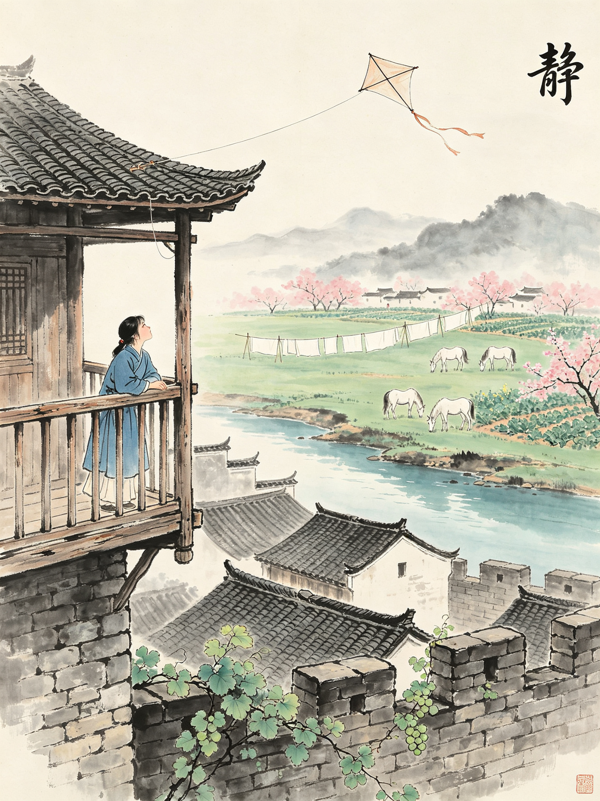
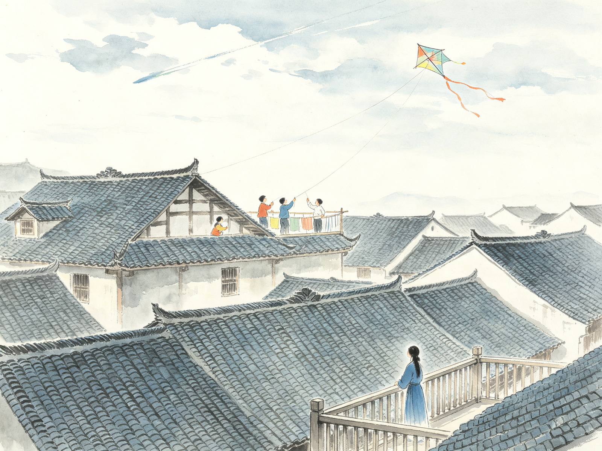
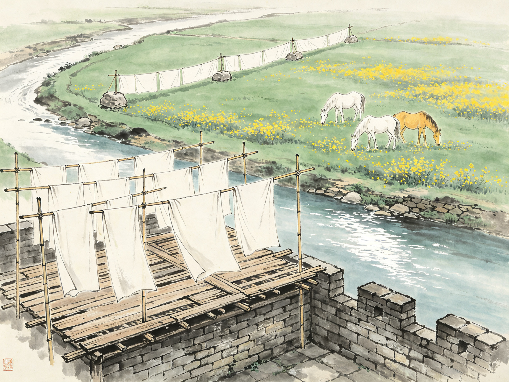
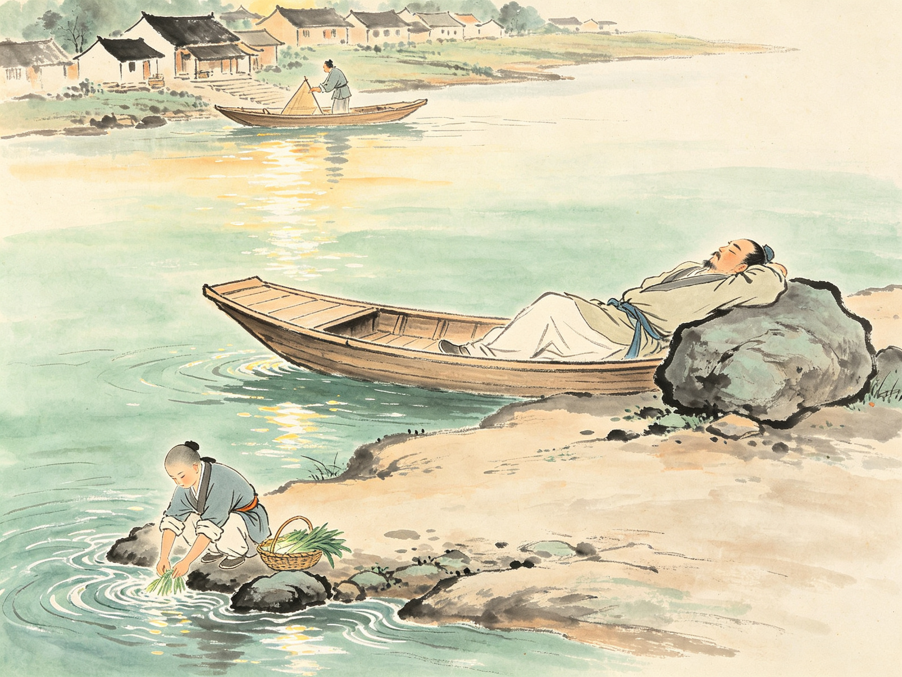
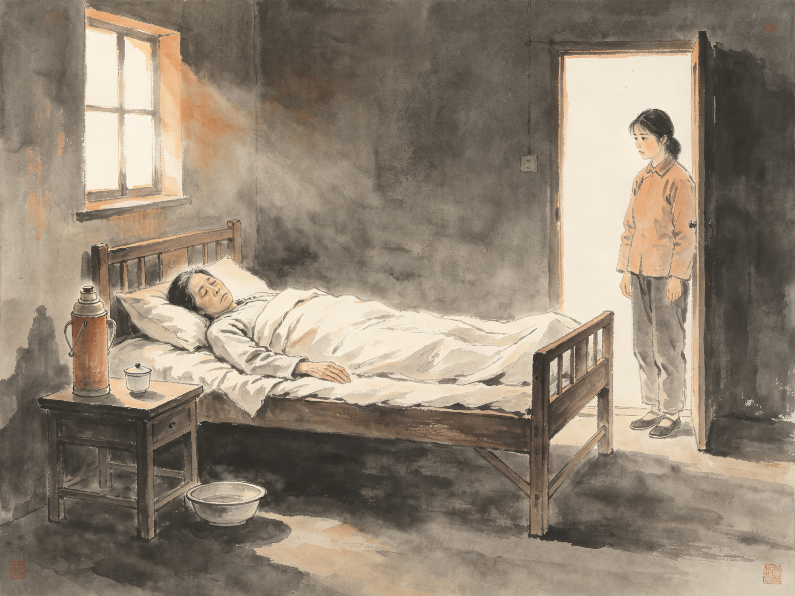
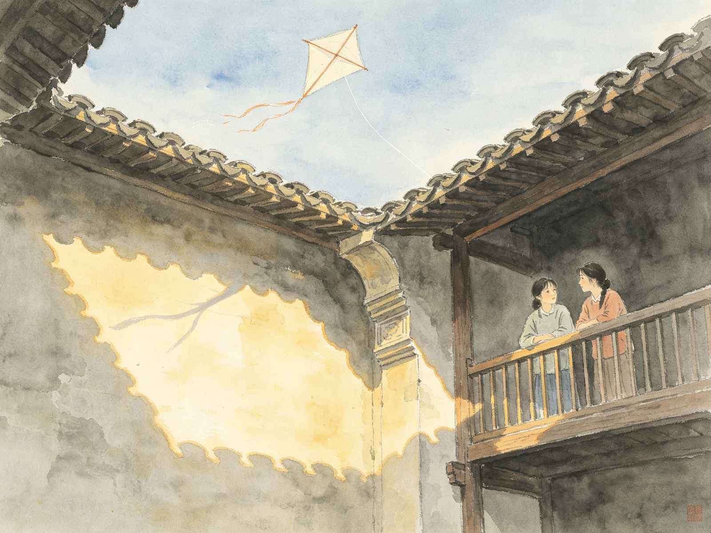
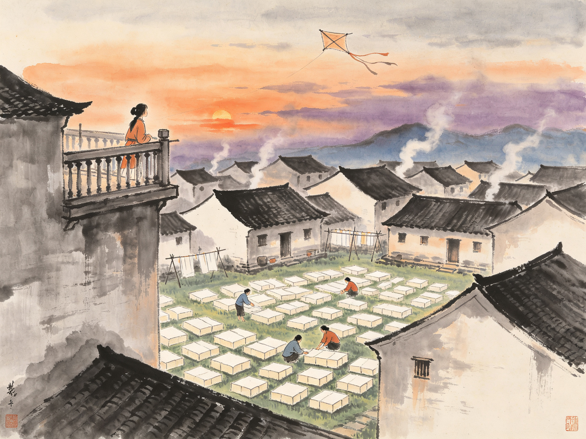
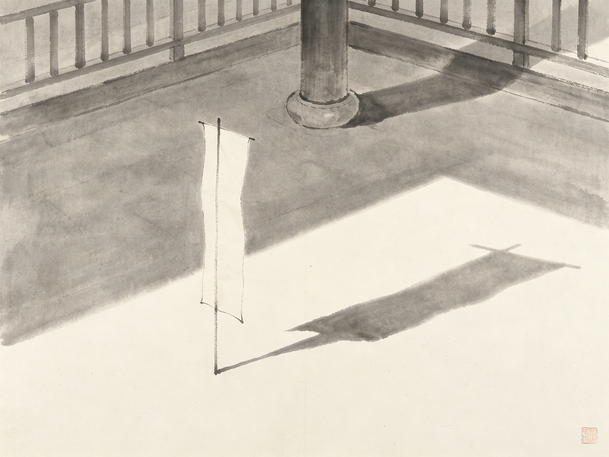

战乱中，十四岁的岳珉与病中的母亲、嫂嫂、姊姊避居小城，等一封永远不会来的信。
晒楼上有风筝、小河、渡船与桃花——一切都那么静，静得让人心碎。
点击播放开篇朗读，走进这个"静"的世界。
春天日子是长极了的。长长的白日，一个小城中，老年人不向太阳取暖就是打瞌睡，少年人无事作时皆在晒楼或空坪里放风筝。
天上白白的日头慢慢的移着，云影慢慢的移着，什么人家的风筝脱线了，各处便皆有人仰了头望到天空，小孩子皆大声乱嚷，手脚齐动，盼望到这无主风筝，落在自己家中的天井里。

小城春日 · 谁家的风筝脱了线
女孩子岳珉年纪约十四岁左右，有一张营养不良的小小白脸，穿着新上身不久长可齐膝的蓝布袍子，正在后楼屋顶晒台上，望到一个从城里不知谁处飏来的脱线风筝，在头上高空里斜斜的溜过去，眼看到那线脚曳在屋瓦上……
这晒楼原如这小城里所有平常晒楼一样，是用一些木枋，疏疏的排列到一个木架上，且多数是上了点年纪的。
晒楼前面是石头城墙，可以望到城墙上石罅里植根新发芽的葡萄藤。晒楼后面是一道小河，河水又清又软，很温柔的流着。

点一点晒楼外的风景，看岳珉看见了什么
日头十分温暖，景象极其沉静，两个人一句话不说，望了一会天上，又望了一会河水。河水不像早晚那么绿，有些地方似乎是蓝色，有些地方又为日光照成一片银色。
两个人望到马，望到青草，望到一切，小孩子快乐得如痴，女孩子似乎想到很远的一些别的东西。
他们是逃难来的，这地方并不是家乡，也不是所要到的地方。母亲，大嫂，姊姊，姊姊的儿子北生，小丫头翠云一群人中就只五岁大的北生是男子。
糊糊涂涂坐了十四天小小篷船，船到了这里以后，应当换轮船了，一打听各处，才知道××城还在被围，过上海或过南京的船车全已不能开行。
十四天小小篷船 · 前途茫茫
几个人住此已经有四十天了……母亲原是一个多病的人，到此一月来各处还无回信，路费剩下来的已有限得很，身体原来就很坏，加之路上又十分辛苦，自然就更坏了。
走进沈从文的湘西 · 凤凰古城（航拍中国）
这河中因为去桥较远，为了方便，还有一只渡船，这渡船宽宽的如一条板凳，懒懒的搁在滩上。……守渡船的人，这时正躺在大坪中大石块上睡觉。

渡船 · 守渡人 · 小尼姑四林
"为什么这样清静？"女孩岳珉心里想着。
这小尼姑走到河边……从提篮里取出一大束青菜，一一的拿到面前，在流水里乱摇乱摆。因此一来，河水便发亮的滑动不止。
这尼姑到后大约也觉得这回声很有趣了，就停顿了工作，尖锐的喊叫"四林，四林"，那边也便应着"四林，四林"。
想起这小尼姑的快乐，想起河里的水，远处的花，天上的云，以及屋里母亲的病，这女孩子，不知不觉又有点寂寞起来了。
到房里去时，看到躺在床上的母亲，静静的如一个死人，很柔弱很安静的呼吸着，又瘦又狭的脸上，为一种疲劳忧愁所笼罩。

静静如一个死人 · 又瘦又狭的脸
两人故意这样乐观的说着，互相哄着对面那一个人，口上虽那么说着，女孩岳珉心里却那么想着："妈妈病怎么办？"
姊姊说："北生你一定又同小姨上晒楼了，不小心，把脚摔断，将来成跛子！"
小孩走过身边来，把两只手围抱着他母亲："娘，娘，大婆又咯咯的吐了，她收到枕头下！"

天井 · 日影 · 断线的风筝
只见到大嫂正在裁纸，大姊姊坐在床边，想检察那小痰盂，母亲先是不允许，用手拦阻，后来大姊仍然见到了，只是摇头。……女孩岳珉不知为什么，心里尽是酸酸的，站在天井里，同谁生气似的，红了眼睛，咬着嘴唇。
翠云丫头于是又说："看呀，看呀，快来看呀，一个一块瓦的大风筝跑了，快来，快来，就在头上，我们捉它！"
女孩岳珉抬起来了头，果然从天井里也可以望到一个高高的风筝，如同一个吃醉了酒的巡警神气，偏偏斜斜的滑过去，隐隐约约还看到一截白线，很长的在空中摇摆。
也不是为看风筝，也不是为看新娘子……上了晒楼，仍然在栏干边傍着，眺望到一切远处近处，心里慢慢的就平静了。

黄昏 · 炊烟 · 晒楼三眺
沈从文《静》：催人泪下的超短篇小说（有声朗读）
这时听到隔壁有人拍门，有人互相问答说话。女孩岳珉心里很希奇的想到："谁在问谁？莫非爸爸同哥哥来了，在门前问门牌号数罢？"这样想到，心便骤然跳跃起来，忙匆匆的走到二门边去，只等候有什么人拍门拉铃子，就一定是远处来的人了。
可是，过一会儿，一切又都寂静了。

日影如旗
女孩岳珉便不知所谓的微微的笑着。日影斜斜的，把屋角同晒楼柱头的影子，映到天井角上，恰恰如另外一个地方，竖立在她们所等候的那个爸爸坟上一面纸制的旗帜。
一九三二年三月三十日作
（萌妹述，为纪念姊姊亡儿北生而作。）
愿每个等待的人，都能等到他的信。